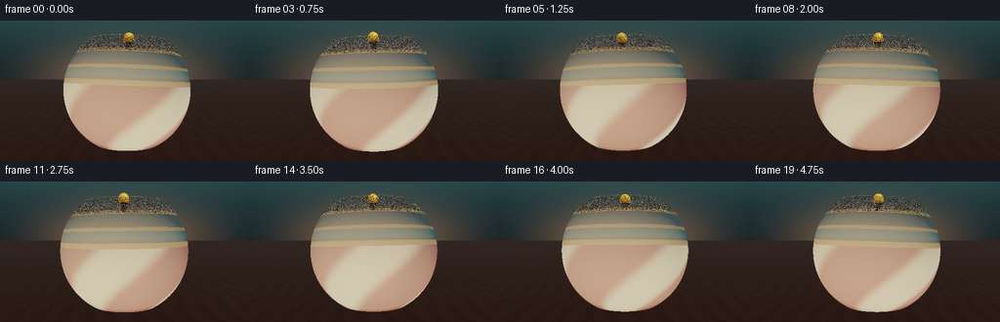
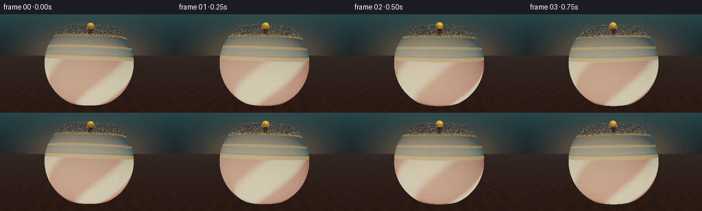
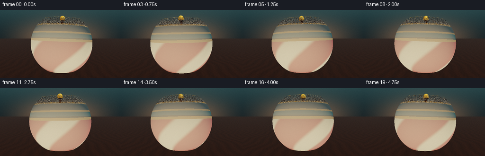
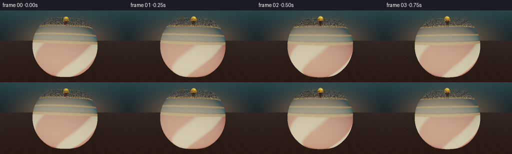

CODING AGENTS AS PIXEL WORLD MODELS
traex/DeepSeek-V4.1-Flash · instance_preservation_0037
点击播放 · 原生 RGB 像素
逐轮保存的候选
回放视频、检查图与代码变化。
每份候选均可单独播放。实际图片检查记录在下方工具轨迹中。
候选 01播放与检查图
点击播放 · 原生 RGB 像素


展开代码变化
--- 上一保存版本
+++ 本次保存版本
@@ -0,0 +1,435 @@
+from __future__ import annotations
+
+import math
+from pathlib import Path
+
+import cv2
+import numpy as np
+from PIL import Image
+
+import artifact_io
+
+
+CASE_DIR = Path(__file__).resolve().parent
+WIDTH, HEIGHT = 256, 144
+FRAMES, FPS = 20, 4.0
+SUPERSAMPLE = 2
+EPS = 1e-4
+
+
+def srgb(rgb: tuple[int, int, int]) -> np.ndarray:
+ return (np.asarray(rgb, dtype=np.float32) / 255.0) ** 2.2
+
+
+def normalize(vector: np.ndarray) -> np.ndarray:
+ return vector / np.maximum(np.linalg.norm(vector, axis=-1, keepdims=True), 1e-8)
+
+
+def rotation_x(angle: float) -> np.ndarray:
+ c, s = math.cos(angle), math.sin(angle)
+ return np.array(((1.0, 0.0, 0.0), (0.0, c, -s), (0.0, s, c)), dtype=np.float32)
+
+
+def rotation_y(angle: float) -> np.ndarray:
+ c, s = math.cos(angle), math.sin(angle)
+ return np.array(((c, 0.0, s), (0.0, 1.0, 0.0), (-s, 0.0, c)), dtype=np.float32)
+
+
+def rotation_z(angle: float) -> np.ndarray:
+ c, s = math.cos(angle), math.sin(angle)
+ return np.array(((c, -s, 0.0), (s, c, 0.0), (0.0, 0.0, 1.0)), dtype=np.float32)
+
+
+def smoothstep(edge0: float, edge1: float, value: np.ndarray) -> np.ndarray:
+ x = np.clip((value - edge0) / (edge1 - edge0), 0.0, 1.0)
+ return x * x * (3.0 - 2.0 * x)
+
+
+def smooth_min(a: np.ndarray, b: np.ndarray, k: float) -> np.ndarray:
+ h = np.clip(0.5 + 0.5 * (b - a) / k, 0.0, 1.0)
+ return b * (1.0 - h) + a * h - k * h * (1.0 - h)
+
+
+def ellipsoid_sdf(points: np.ndarray, center: np.ndarray, radii: np.ndarray) -> np.ndarray:
+ q = (points - center) / radii
+ k0 = np.linalg.norm(q, axis=1)
+ k1 = np.linalg.norm(q / radii, axis=1)
+ return k0 * (k0 - 1.0) / np.maximum(k1, 1e-6)
+
+
+def capped_cone_sdf(
+ points: np.ndarray,
+ center_y: float,
+ half_height: float,
+ radius_bottom: float,
+ radius_top: float,
+) -> np.ndarray:
+ qx = np.hypot(points[:, 0], points[:, 2])
+ qy = points[:, 1] - center_y
+ k1 = np.array((radius_top, half_height), dtype=np.float32)
+ k2 = np.array((radius_top - radius_bottom, 2.0 * half_height), dtype=np.float32)
+ ca = np.stack(
+ (
+ qx - np.minimum(qx, np.where(qy < 0.0, radius_bottom, radius_top)),
+ np.abs(qy) - half_height,
+ ),
+ axis=1,
+ )
+ cb = np.stack((qx, qy), axis=1) - k1 + k2 * np.clip(
+ ((k1[0] - qx) * k2[0] + (k1[1] - qy) * k2[1]) / np.dot(k2, k2),
+ 0.0,
+ 1.0,
+ )[:, None]
+ sign = np.where(
+ cb[:, 0] * k2[0] + cb[:, 1] * k2[1] < 0.0,
+ -1.0,
+ 1.0,
+ )
+ return sign * np.minimum(np.linalg.norm(ca, axis=1), np.linalg.norm(cb, axis=1))
+
+
+def vertical_cylinder_sdf(
+ points: np.ndarray, y0: float, y1: float, radius: float
+) -> np.ndarray:
+ qx = np.hypot(points[:, 0], points[:, 2]) - radius
+ qy = points[:, 1] - (y0 + y1) * 0.5
+ half_height = (y1 - y0) * 0.5
+ outside = np.hypot(np.maximum(qx, 0.0), np.maximum(np.abs(qy) - half_height, 0.0))
+ inside = np.minimum(np.maximum(qx, np.abs(qy) - half_height), 0.0)
+ return outside + inside
+
+
+def top_sdf(points: np.ndarray) -> np.ndarray:
+ # A pointed lower cone flows into a rounded wooden body, then narrows
+ # into a turned neck, brass stem, and small knob.
+ tip = capped_cone_sdf(points, 0.19, 0.19, 0.0, 0.305)
+ belly = ellipsoid_sdf(
+ points,
+ np.array((0.0, 0.49, 0.0), dtype=np.float32),
+ np.array((0.385, 0.34, 0.385), dtype=np.float32),
+ )
+ shoulder = ellipsoid_sdf(
+ points,
+ np.array((0.0, 0.70, 0.0), dtype=np.float32),
+ np.array((0.345, 0.27, 0.345), dtype=np.float32),
+ )
+ collar = capped_cone_sdf(points, 0.925, 0.105, 0.30, 0.115)
+ neck = vertical_cylinder_sdf(points, 1.015, 1.125, 0.105)
+ stem = vertical_cylinder_sdf(points, 1.105, 1.415, 0.035)
+ knob = ellipsoid_sdf(
+ points,
+ np.array((0.0, 1.435, 0.0), dtype=np.float32),
+ np.array((0.076, 0.086, 0.076), dtype=np.float32),
+ )
+
+ body = smooth_min(tip, belly, 0.035)
+ body = smooth_min(body, shoulder, 0.045)
+ body = smooth_min(body, collar, 0.026)
+ body = smooth_min(body, neck, 0.022)
+ body = smooth_min(body, stem, 0.014)
+ return smooth_min(body, knob, 0.018)
+
+
+def sdf_gradient(points: np.ndarray) -> np.ndarray:
+ h = 0.0012
+ k0 = np.array((1.0, -1.0, -1.0), dtype=np.float32)
+ k1 = np.array((-1.0, -1.0, 1.0), dtype=np.float32)
+ k2 = np.array((-1.0, 1.0, -1.0), dtype=np.float32)
+ k3 = np.array((1.0, 1.0, 1.0), dtype=np.float32)
+ normal = (
+ k0 * top_sdf(points + k0 * h)[:, None]
+ + k1 * top_sdf(points + k1 * h)[:, None]
+ + k2 * top_sdf(points + k2 * h)[:, None]
+ + k3 * top_sdf(points + k3 * h)[:, None]
+ )
+ return normalize(normal)
+
+
+def world_to_local(points: np.ndarray, rotation: np.ndarray, pivot: np.ndarray) -> np.ndarray:
+ return (points - pivot) @ rotation.T
+
+
+def local_to_world_vectors(vectors: np.ndarray, rotation: np.ndarray) -> np.ndarray:
+ return vectors @ rotation
+
+
+def raymarch_top(
+ origins: np.ndarray,
+ directions: np.ndarray,
+ rotation: np.ndarray,
+ pivot: np.ndarray,
+) -> tuple[np.ndarray, np.ndarray, np.ndarray]:
+ count = len(origins)
+ origin_local = world_to_local(origins, rotation, pivot)
+ direction_local = normalize(directions @ rotation.T)
+ center = np.array((0.0, 0.73, 0.0), dtype=np.float32)
+ oc = origin_local - center
+ b = np.sum(oc * direction_local, axis=1)
+ c = np.sum(oc * oc, axis=1) - 0.86**2
+ discriminant = b * b - c
+ valid = discriminant > 0.0
+ root = np.sqrt(np.maximum(discriminant, 0.0))
+ t_near = np.maximum(-b - root, 0.001)
+ t_far = -b + root
+ valid &= t_far > 0.0
+
+ hit = np.zeros(count, dtype=bool)
+ t_hit = np.full(count, np.inf, dtype=np.float32)
+ p_hit = np.zeros((count, 3), dtype=np.float32)
+ t = np.where(valid, t_near, np.inf).astype(np.float32)
+ active = np.flatnonzero(valid)
+
+ for _ in range(96):
+ if active.size == 0:
+ break
+ points = origin_local[active] + direction_local[active] * t[active, None]
+ distance = top_sdf(points)
+ now_hit = distance < 0.0008
+ if np.any(now_hit):
+ hit_indices = active[now_hit]
+ hit[hit_indices] = True
+ t_hit[hit_indices] = t[hit_indices]
+ p_hit[hit_indices] = points[now_hit]
+ t[active] += np.maximum(distance * 0.62, 0.0011)
+ active = active[(~now_hit) & (t[active] < t_far[active])]
+
+ return hit, t_hit, p_hit
+
+
+def soft_shadow(
+ points_world: np.ndarray,
+ normals_world: np.ndarray,
+ light_direction: np.ndarray,
+ rotation: np.ndarray,
+ pivot: np.ndarray,
+) -> np.ndarray:
+ if len(points_world) == 0:
+ return np.empty(0, dtype=np.float32)
+
+ count = len(points_world)
+ starts = points_world + normals_world * 0.006
+ origin_local = world_to_local(starts, rotation, pivot)
+ direction_local = light_direction @ rotation.T
+ result = np.ones(count, dtype=np.float32)
+ distance_traveled = np.full(count, 0.012, dtype=np.float32)
+ active = np.arange(count)
+
+ for _ in range(22):
+ if active.size == 0:
+ break
+ points = origin_local[active] + direction_local[None, :] * distance_traveled[active, None]
+ distance = top_sdf(points)
+ result[active] = np.minimum(
+ result[active], np.clip(9.0 * distance / distance_traveled[active], 0.0, 1.0)
+ )
+ distance_traveled[active] += np.clip(distance, 0.014, 0.11)
+ active = active[(distance > 0.0007) & (distance_traveled[active] < 1.35)]
+
+ return smoothstep(0.02, 0.65, result)
+
+
+def shade_top(
+ points_local: np.ndarray,
+ normals_world: np.ndarray,
+ view_direction: np.ndarray,
+ shadow: np.ndarray,
+) -> np.ndarray:
+ x, y, z = points_local.T
+ theta = np.arctan2(z, x)
+ stripe_phase = 3.0 * theta + 4.2 * (y - 0.46)
+ paint = smoothstep(-0.18, 0.72, np.sin(stripe_phase))
+
+ cream = srgb((245, 226, 185))
+ vermilion = srgb((184, 27, 35))
+ teal = srgb((18, 91, 91))
+ walnut = srgb((65, 34, 20))
+ brass = srgb((205, 148, 58))
+ near_black = srgb((20, 22, 22))
+
+ color = vermilion[None, :] * (1.0 - paint[:, None]) + cream[None, :] * paint[:, None]
+ color = np.where((y > 0.805)[:, None], teal[None, :], color)
+ color = np.where((y > 1.035)[:, None], walnut[None, :], color)
+ color = np.where((y > 1.385)[:, None], brass[None, :], color)
+
+ band = (y > 0.805) & (y < 0.865)
+ collar_line = (y > 0.995) & (y < 1.035)
+ stem_ring = (y > 1.185) & (y < 1.225)
+ gold_mask = band | collar_line | stem_ring
+ color = np.where(gold_mask[:, None], brass[None, :], color)
+ color = np.where(((y > 0.865) & (y < 0.895))[:, None], near_black[None, :], color)
+
+ # A restrained painted highlight follows the broad spiral stripes.
+ color *= 1.0 + 0.08 * np.sin(stripe_phase)[:, None] * (y < 0.81)[:, None]
+
+ key = normalize(np.array((0.52, 0.82, 0.35), dtype=np.float32))
+ fill = normalize(np.array((-0.60, 0.18, 0.72), dtype=np.float32))
+ rim = normalize(np.array((0.22, 0.55, -0.78), dtype=np.float32))
+ half_vector = normalize(key[None, :] + view_direction)
+
+ ndl = np.maximum(np.sum(normals_world * key[None, :], axis=1), 0.0)
+ ndf = np.maximum(np.sum(normals_world * fill[None, :], axis=1), 0.0)
+ ndr = np.maximum(np.sum(normals_world * rim[None, :], axis=1), 0.0)
+ ndv = np.maximum(np.sum(normals_world * view_direction, axis=1), 0.0)
+ ndh = np.maximum(np.sum(normals_world * half_vector, axis=1), 0.0)
+
+ is_metal = gold_mask | (y > 1.385)
+ diffuse = color * (
+ (0.20 + 0.08 * normals_world[:, 1])[:, None]
+ + (0.90 * ndl * shadow)[:, None]
+ + (0.25 * ndf)[:, None]
+ )
+ specular_power = np.where(is_metal, 105.0, 68.0)
+ specular = ndh**specular_power * np.where(is_metal, 1.30, 0.82) * shadow
+ specular_color = np.where(
+ is_metal[:, None],
+ color * 1.10 + 0.10,
+ np.array((1.0, 0.94, 0.83), dtype=np.float32)[None, :],
+ )
+ fresnel = 0.035 + 0.965 * (1.0 - ndv) ** 5.0
+ reflection = np.array((0.22, 0.34, 0.35), dtype=np.float32)[None, :]
+
+ shaded = diffuse + specular[:, None] * specular_color
+ shaded += (0.34 * ndr * fresnel)[:, None] * np.array((0.80, 0.55, 0.31))
+ shaded += (0.20 * fresnel)[:, None] * reflection
+ return shaded
+
+
+def shade_floor(
+ points_world: np.ndarray,
+ view_direction: np.ndarray,
+ shadow: np.ndarray,
+) -> np.ndarray:
+ x, _, z = points_world.T
+ broad_grain = 0.5 + 0.5 * np.sin(22.0 * x + 1.8 * np.sin(3.1 * z))
+ fine_grain = 0.5 + 0.5 * np.sin(67.0 * x + 2.6 * np.sin(8.0 * z + 0.8))
+ grain = 0.74 + 0.18 * broad_grain + 0.08 * fine_grain
+ walnut = srgb((83, 49, 31))
+ color = walnut[None, :] * grain[:, None]
+
+ key = normalize(np.array((0.52, 0.82, 0.35), dtype=np.float32))
+ half_vector = normalize(key[None, :] + view_direction)
+ ndl = np.maximum(view_direction[:, 1] * 0.0 + key[1], 0.0)
+ ndh = np.maximum(np.sum(np.array((0.0, 1.0, 0.0), dtype=np.float32)[None, :] * half_vector, axis=1), 0.0)
+ contact_glow = np.exp(-((x / 0.62) ** 2 + (z / 0.48) ** 2) * 1.8)
+
+ diffuse = color * ((0.33 + 0.72 * ndl * shadow)[:, None])
+ sheen = (0.16 * ndh**55.0 + 0.035 * contact_glow) * shadow
+ fresnel = 0.02 + 0.20 * (1.0 - np.maximum(view_direction[:, 1], 0.0)) ** 4.0
+ reflection = np.array((0.055, 0.085, 0.090), dtype=np.float32)[None, :]
+ return diffuse + sheen[:, None] * np.array((0.78, 0.65, 0.48)) + fresnel[:, None] * reflection
+
+
+def aces_tonemap(color: np.ndarray) -> np.ndarray:
+ return np.clip((color * (2.51 * color + 0.03)) / (color * (2.43 * color + 0.59) + 0.14), 0.0, 1.0)
+
+
+def render_frame(index: int) -> np.ndarray:
+ render_width = WIDTH * SUPERSAMPLE
+ render_height = HEIGHT * SUPERSAMPLE
+ yy, xx = np.mgrid[0:render_height, 0:render_width].astype(np.float32)
+ screen_x = (xx + 0.5) / render_width * 2.0 - 1.0
+ screen_y = 1.0 - (yy + 0.5) / render_height * 2.0
+
+ time = index / FPS
+ camera = np.array((0.0, 0.88, 3.42), dtype=np.float32)
+ target = np.array((0.0, 0.72, 0.0), dtype=np.float32)
+ forward = normalize(target - camera)
+ right = normalize(np.cross(forward, np.array((0.0, 1.0, 0.0), dtype=np.float32)))
+ camera_up = normalize(np.cross(right, forward))
+ tan_half_fov = math.tan(math.radians(32.0) * 0.5)
+ aspect = WIDTH / HEIGHT
+
+ directions = (
+ forward[None, :]
+ + screen_x.reshape(-1, 1) * tan_half_fov * aspect * right[None, :]
+ + screen_y.reshape(-1, 1) * tan_half_fov * camera_up[None, :]
+ )
+ directions = normalize(directions)
+ origins = np.broadcast_to(camera, directions.shape).copy()
+
+ spin = math.radians(38.0 * index + 23.0)
+ wobble_phase = 0.6 + 2.0 * math.pi * time / 5.2
+ tilt_z = math.radians(1.65 + 0.35 * math.sin(wobble_phase))
+ tilt_x = math.radians(0.95 * math.sin(wobble_phase + 0.85))
+ rotation = rotation_x(tilt_x) @ rotation_z(tilt_z) @ rotation_y(spin)
+ pivot = np.array((0.0, 0.004, 0.0), dtype=np.float32)
+
+ top_hit, top_t, top_points_local = raymarch_top(origins, directions, rotation, pivot)
+ floor_denominator = np.where(directions[:, 1] < -1e-5, directions[:, 1], np.nan)
+ floor_t = -origins[:, 1] / floor_denominator
+ floor_valid = np.isfinite(floor_t) & (floor_t > 0.0)
+ top_visible = top_hit & ((~floor_valid) | (top_t < floor_t))
+ floor_visible = floor_valid & (~top_visible)
+
+ output = np.zeros((len(directions), 3), dtype=np.float32)
+ horizon = smoothstep(-0.08, 0.52, directions[:, 1])
+ background_low = srgb((16, 37, 43))
+ background_high = srgb((67, 91, 92))
+ background = (
+ background_low[None, :] * (1.0 - horizon[:, None])
+ + background_high[None, :] * horizon[:, None]
+ )
+ glow = np.exp(
+ -(
+ (screen_x.reshape(-1) / 0.80) ** 2
+ + ((screen_y.reshape(-1) - 0.15) / 0.62) ** 2
+ )
+ * 1.65
+ )
+ background += glow[:, None] * np.array((0.15, 0.085, 0.045), dtype=np.float32)
+ output[:] = background
+
+ if np.any(floor_visible):
+ indices = np.flatnonzero(floor_visible)
+ floor_points = origins[indices] + directions[indices] * floor_t[indices, None]
+ floor_normals = np.broadcast_to(
+ np.array((0.0, 1.0, 0.0), dtype=np.float32), floor_points.shape
+ ).copy()
+ light_direction = normalize(np.array((0.52, 0.82, 0.35), dtype=np.float32))
+ shadow = soft_shadow(floor_points, floor_normals, light_direction, rotation, pivot)
+ output[indices] = shade_floor(floor_points, -directions[indices], shadow)
+
+ if np.any(top_visible):
+ indices = np.flatnonzero(top_visible)
+ local_points = top_points_local[indices]
+ normals_local = sdf_gradient(local_points)
+ normals_world = normalize(local_to_world_vectors(normals_local, rotation))
+ world_points = origins[indices] + directions[indices] * top_t[indices, None]
+ view_direction = -directions[indices]
+ light_direction = normalize(np.array((0.52, 0.82, 0.35), dtype=np.float32))
+ shadow = soft_shadow(world_points, normals_world, light_direction, rotation, pivot)
+ output[indices] = shade_top(local_points, normals_world, view_direction, shadow)
+
+ output = aces_tonemap(output)
+ output = np.power(np.clip(output, 0.0, 1.0), 1.0 / 2.2)
+
+ # A tiny amount of stable grain prevents large dark gradients from banding.
+ rng = np.random.default_rng(7100 + index)
+ grain = rng.normal(0.0, 0.0045, size=(len(output), 1)).astype(np.float32)
+ output = np.clip(output + grain, 0.0, 1.0)
+ image = np.rint(output.reshape(render_height, render_width, 3) * 255.0).astype(np.uint8)
+ image = Image.fromarray(image, mode="RGB").resize((WIDTH, HEIGHT), Image.Resampling.LANCZOS)
+ return np.asarray(image, dtype=np.uint8)
+
+
+def main() -> None:
+ frames = np.stack([render_frame(index) for index in range(FRAMES)])
+ artifact_io.save(frames, CASE_DIR)
+
+ video_path = CASE_DIR / "video.mp4"
+ writer = cv2.VideoWriter(
+ str(video_path),
+ cv2.VideoWriter_fourcc(*"mp4v"),
+ FPS,
+ (WIDTH, HEIGHT),
+ )
+ if not writer.isOpened():
+ raise RuntimeError("Could not open MP4 writer")
+ for frame in frames:
+ writer.write(cv2.cvtColor(frame, cv2.COLOR_RGB2BGR))
+ writer.release()
+ print(f"Wrote {len(frames)} frames to {CASE_DIR}")
+
+
+if __name__ == "__main__":
+ main()
候选 02播放与检查图
点击播放 · 原生 RGB 像素


展开代码变化
--- 上一保存版本
+++ 本次保存版本
@@ -237,10 +237,10 @@
x, y, z = points_local.T
theta = np.arctan2(z, x)
stripe_phase = 3.0 * theta + 4.2 * (y - 0.46)
- paint = smoothstep(-0.18, 0.72, np.sin(stripe_phase))
-
- cream = srgb((245, 226, 185))
- vermilion = srgb((184, 27, 35))
+ paint = smoothstep(0.10, 0.66, np.sin(stripe_phase))
+
+ cream = srgb((247, 225, 176))
+ vermilion = srgb((203, 29, 35))
teal = srgb((18, 91, 91))
walnut = srgb((65, 34, 20))
brass = srgb((205, 148, 58))
@@ -317,6 +317,18 @@
fresnel = 0.02 + 0.20 * (1.0 - np.maximum(view_direction[:, 1], 0.0)) ** 4.0
reflection = np.array((0.055, 0.085, 0.090), dtype=np.float32)[None, :]
return diffuse + sheen[:, None] * np.array((0.78, 0.65, 0.48)) + fresnel[:, None] * reflection
+
+
+def shade_reflection(
+ points_local: np.ndarray,
+ normals_world: np.ndarray,
+ view_direction: np.ndarray,
+ shadow: np.ndarray,
+) -> np.ndarray:
+ color = shade_top(points_local, normals_world, view_direction, shadow)
+ return color * np.array((0.60, 0.67, 0.66), dtype=np.float32) + np.array(
+ (0.012, 0.025, 0.027), dtype=np.float32
+ )
def aces_tonemap(color: np.ndarray) -> np.ndarray:
@@ -388,6 +400,48 @@
light_direction = normalize(np.array((0.52, 0.82, 0.35), dtype=np.float32))
shadow = soft_shadow(floor_points, floor_normals, light_direction, rotation, pivot)
output[indices] = shade_floor(floor_points, -directions[indices], shadow)
+
+ # A low-gloss reflection of the enamel and brass grounds the object.
+ reflection_directions = directions[indices].copy()
+ reflection_directions[:, 1] *= -1.0
+ reflection_directions = normalize(reflection_directions)
+ reflection_hit, _, reflection_points = raymarch_top(
+ floor_points + np.array((0.0, 0.001, 0.0), dtype=np.float32),
+ reflection_directions,
+ rotation,
+ pivot,
+ )
+ reflection_mask = (
+ reflection_hit
+ & (floor_points[:, 2] > -1.55)
+ & (floor_points[:, 2] < 0.42)
+ )
+ if np.any(reflection_mask):
+ reflect_indices = np.flatnonzero(reflection_mask)
+ local_points = reflection_points[reflect_indices]
+ normals_local = sdf_gradient(local_points)
+ normals_world = normalize(local_to_world_vectors(normals_local, rotation))
+ reflection_shadow = soft_shadow(
+ floor_points[reflect_indices],
+ floor_normals[reflect_indices],
+ light_direction,
+ rotation,
+ pivot,
+ )
+ reflection_color = shade_reflection(
+ local_points,
+ normals_world,
+ -reflection_directions[reflect_indices],
+ reflection_shadow,
+ )
+ depth_fade = np.clip(
+ (floor_points[reflect_indices, 2] + 0.70) / 2.25, 0.0, 1.0
+ )
+ reflection_weight = (0.15 + 0.13 * depth_fade) * shadow[reflect_indices]
+ output[indices[reflect_indices]] = (
+ output[indices[reflect_indices]] * (1.0 - reflection_weight[:, None])
+ + reflection_color * reflection_weight[:, None]
+ )
if np.any(top_visible):
indices = np.flatnonzero(top_visible)
@@ -408,7 +462,7 @@
grain = rng.normal(0.0, 0.0045, size=(len(output), 1)).astype(np.float32)
output = np.clip(output + grain, 0.0, 1.0)
image = np.rint(output.reshape(render_height, render_width, 3) * 255.0).astype(np.uint8)
- image = Image.fromarray(image, mode="RGB").resize((WIDTH, HEIGHT), Image.Resampling.LANCZOS)
+ image = Image.fromarray(image).resize((WIDTH, HEIGHT), Image.Resampling.LANCZOS)
return np.asarray(image, dtype=np.uint8)
可观测工具轨迹
实际执行的命令与返回图片。
命令 1exit 0
/bin/bash -c 'cat prompt.txt'
命令 2exit 0
/bin/bash -c 'cat GENERATION_RULES.md'
命令 3exit 0
/bin/bash -c 'cat task_spec.json'
命令 4exit 0
/bin/bash -c "rg --files -g '"'!*.pyc'"' -g '"'!__pycache__'"' | sed -n '1,200p'"
命令 5exit 0
/bin/bash -c "sed -n '1,240p' artifact_io.py"
命令 6exit 0
/bin/bash -c "sed -n '1,220p' player_template.html"
命令 7exit 0
/bin/bash -c "python - <<'PY' import sys mods=['numpy','PIL','cv2','imageio','scipy'] for m in mods: try: mod=__import__(m) print(m, getattr(mod,'__version__','ok')) except Exception as e: print(m, 'MISSING', e) PY"
命令 8exit 0
/bin/bash -c 'git status --short'
命令 9exit 0
/bin/bash -c 'python generate.py'
命令 10exit 0
/bin/bash -c 'command -v chafa || command -v viu || command -v jp2 || command -v img2txt || true'
命令 11exit 0
/bin/bash -c 'ls -lh frames/*.png inspection.png video.mp4 pixels.npz index.html | tail -n 25'
命令 12exit 0
/bin/bash -c "python - <<'PY' from PIL import Image import numpy as np for p in ['frames/00.png','frames/05.png','frames/10.png','frames/19.png','inspection.png']: im=np.array(Image.open(p)) print(p, im.shape, 'mean', im.mean((0,1)).round(1), 'min', im.min(), 'max', im.max(), 'std', im.std().round(1)) PY"
命令 13exit 0
/bin/bash -c "python - <<'PY'
from PIL import Image, ImageOps, ImageEnhance
import numpy as np
im=Image.open('frames/00.png').convert('RGB')
# crop-ish ASCII with luminance, every 2x3 pixels
im=im.resize((96,48), Image.Resampling.LANCZOS)
a=np.array(im).astype(float)
y=(0.2126*a[:,:,0]+0.7152*a[:,:,1]+0.0722*a[:,:,2])/255
chars=' .,:;irsXA253hMHGS#9B&@'
for row in y:
print(''.join(chars[min(len(chars)-1,int(v*(len(chars)-1)))] for v in row))
PY"命令 14exit 0
/bin/bash -c "python - <<'PY'
from PIL import Image
import numpy as np
for p in ['frames/00.png','frames/05.png','frames/10.png','frames/15.png']:
a=np.asarray(Image.open(p)).astype(float)
r,g,b=a.transpose(2,0,1)
masks={
'red':(r>70)&(r>g*1.45)&(r>b*1.3),
'cream':(r>130)&(g>110)&(b>70)&((r-b)<130),
'gold':(r>80)&(g>55)&(g<r*.9)&(b<g*.7),
'bright':(r+g+b>580),
}
print(p)
for k,m in masks.items():
ys,xs=np.where(m)
print(k,len(xs),'bbox', (xs.min(),ys.min(),xs.max(),ys.max()) if len(xs) else None, 'centroid',(xs.mean(),ys.mean()) if len(xs) else None)
PY"命令 15exit 0
/bin/bash -c "python - <<'PY'
from PIL import Image
import numpy as np
for p in ['frames/00.png','frames/05.png','frames/10.png','frames/15.png']:
a=np.asarray(Image.open(p)).astype(float)
r,g,b=a.transpose(2,0,1)
# exclude floor bottom: print average patches by region
print('\\n',p)
for y0,y1 in [(0,20),(20,40),(40,70),(70,90),(90,110),(110,133),(133,144)]:
for x0,x1 in [(0,64),(64,96),(96,160),(160,192),(192,256)]:
patch=a[y0:y1,x0:x1]
print(f'{patch.mean():5.1f}',end=' ')
print()
PY"命令 16exit 0
/bin/bash -c "python - <<'PY'
from PIL import Image
import numpy as np
a=np.array(Image.open('frames/00.png').convert('RGB')).astype(float)
# Print colors at selected rows in center to diagnose object silhouette and palette
for y in range(8,137,4):
row=a[y,55:202:4]
print(f'{y:3d}', ' '.join('%02x%02x%02x'%tuple(v.astype(int)) for v in row))
PY"命令 17exit 0
/bin/bash -c "python - <<'PY'
from PIL import Image
import numpy as np
for p in ['frames/00.png','frames/19.png']:
a=np.array(Image.open(p))
print('\\n',p)
for y in range(0,144,8):
print(y, ' '.join('%3d'%int(v.mean()) for v in a[y].reshape(32,8,3)))
PY"命令 18exit 0
/bin/bash -c "python - <<'PY'
from PIL import Image
import numpy as np
im=np.asarray(Image.open('frames/00.png').convert('RGB'))
im=im.reshape(36,4,64,4,3).mean((1,3))
# palette chars
pal=np.array([[42,67,68],[75,43,28],[220,205,174],[175,39,41],[190,140,53],[120,20,22],[250,245,220],[15,15,15],[235,225,200]])
chars='BFCGRKHWw'
for row in im:
s=''
for c in row:
# identify red by hue first, gold
r,g,b=c
if r>g*1.35 and r>b*1.25: k='R' if r<200 else 'K'
elif r>160 and g>145 and b>110: k='C' if b>150 else 'W'
elif r>100 and g>70 and b<80 and r>g*1.12: k='G'
elif r<45 and g<50 and b<50: k='D'
elif r>g*1.15 and r>b*1.5: k='F'
else: k='B'
s+=k
print(s)
PY"命令 19exit 0
/bin/bash -c 'python generate.py'
命令 20exit 0
/bin/bash -c "python - <<'PY'
from PIL import Image
import numpy as np
for p in ['frames/00.png','frames/05.png','frames/10.png','frames/15.png','frames/19.png']:
a=np.asarray(Image.open(p)).astype(float)
r,g,b=a.transpose(2,0,1)
masks={
'red':(r>70)&(r>g*1.45)&(r>b*1.3),
'bright':(r+g+b>580),
}
print(p,'mean',a.mean((0,1)).round(1))
for k,m in masks.items():
ys,xs=np.where(m)
print(' ',k,len(xs),'bbox', (xs.min(),ys.min(),xs.max(),ys.max()) if len(xs) else None)
PY"命令 21exit 0
/bin/bash -c "python - <<'PY'
from PIL import Image
import numpy as np
im=np.asarray(Image.open('frames/00.png').convert('RGB'))
im=im.reshape(36,4,64,4,3).mean((1,3))
for row in im:
s=''
for c in row:
r,g,b=c
if r>g*1.45 and r>b*1.30: k='R'
elif r>200 and g>175 and b>130: k='C'
elif r>110 and g>75 and b<80 and r>g*1.18: k='G'
elif r<42 and g<50 and b<50: k='D'
elif r>g*1.20 and r>b*1.65: k='F'
else: k='B'
s+=k
print(s)
PY"命令 22exit 0
/bin/bash -c "python - <<'PY'
from PIL import Image
import numpy as np
for p in ['frames/00.png','frames/05.png','frames/10.png','frames/15.png']:
a=np.asarray(Image.open(p)).astype(float)
print('\\n',p)
for y0,y1 in [(16,32),(32,48),(48,64),(64,80),(80,96),(96,112),(112,128)]:
row=[]
for x0,x1 in [(56,72),(72,88),(88,104),(104,120),(120,136),(136,152),(152,168),(168,184),(184,200)]:
patch=a[y0:y1,x0:x1]
# hue categories
r,g,b=patch.mean((0,1))
row.append('%02x%02x%02x'%(int(r),int(g),int(b)))
print(y0,' '.join(row))
PY"命令 23exit 0
/bin/bash -c "python - <<'PY'
import json, numpy as np
from PIL import Image
from pathlib import Path
spec=json.loads(Path('task_spec.json').read_text())
arr=np.load('pixels.npz')['pixels']
frames=np.stack([np.array(Image.open(f'frames/{i:02d}.png').convert('RGB')) for i in range(20)])
print('frames',frames.shape, 'pixels',arr.shape, 'dtype',frames.dtype)
print('spec',spec)
print('size bytes',Path('video.mp4').stat().st_size)
# Mean absolute differences including a static background baseline
for i in [1,5,10,15,19]:
print('diff 00 vs',f'{i:02d}',np.abs(frames[0].astype(int)-frames[i].astype(int)).mean().round(2))
# Foreground center-of-mass proxy from local contrast against the left/right background
import cv2
for i in [0,5,10,15,19]:
gray=cv2.cvtColor(frames[i],cv2.COLOR_RGB2GRAY).astype(float)
edge=cv2.Canny(frames[i],40,110)
ys,xs=np.where(edge>0)
print('edge',i,len(xs),'bbox', (xs.min(),ys.min(),xs.max(),ys.max()))
PY"命令 24exit 0
/bin/bash -c "python - <<'PY'
from PIL import Image
import numpy as np
im=np.asarray(Image.open('frames/00.png').convert('RGB'))
# Sample selected central object pixels from frame 0
for y in range(36,124,8):
vals=[]
for x in range(64,200,8):
r,g,b=im[y,x]
vals.append(f'{r:3d},{g:3d},{b:3d}')
print(y,' | '.join(vals))
PY"命令 25exit 1
/bin/bash -c 'command -v ffprobe && ffprobe -v error -select_streams v:0 -show_entries stream=width,height,r_frame_rate,nb_frames,duration,pix_fmt -of default=noprint_wrappers=1 video.mp4'
命令 26exit 0
/bin/bash -c "python - <<'PY'
from PIL import Image
import numpy as np
ims=[np.asarray(Image.open(f'frames/{i:02d}.png').convert('RGB')).astype(float) for i in [0,1,5,10,15,19]]
for a,b in zip(ims[:-1],ims[1:]):
d=np.abs(a-b).mean(2)
print('body diff',d[40:132,65:195].mean().round(2),'core',d[65:115,80:180].mean().round(2),'max',d.max())
PY"命令 27exit 0
/bin/bash -c "python - <<'PY'
import cv2
cap=cv2.VideoCapture('video.mp4')
count=0
while True:
ok,frame=cap.read()
if not ok: break
count+=1
print('opened',cap.isOpened(),'decoded_frames',count,'fps',cap.get(cv2.CAP_PROP_FPS),'size',int(cap.get(cv2.CAP_PROP_FRAME_WIDTH)),int(cap.get(cv2.CAP_PROP_FRAME_HEIGHT)))
cap.release()
PY"命令 28exit 0
/bin/bash -c "python - <<'PY'
from PIL import Image
import numpy as np
a=np.asarray(Image.open('frames/00.png')).astype(int)
for name,(x0,y0,x1,y1) in {'body':(65,65,195,133),'upper':(65,40,195,65),'floor':(0,133,256,144)}.items():
p=a[y0:y1,x0:x1]; r,g,b=p.transpose(2,0,1)
for ratio in [1.2,1.35,1.5,1.8]:
m=(r>g*ratio)&(r>b*ratio)&(r>70)
print(name,ratio,m.sum())
print('means',p.mean((0,1)))
PY"命令 29exit 0
/bin/bash -c "python - <<'PY'
from PIL import Image
import numpy as np
a=np.asarray(Image.open('frames/00.png')).astype(float)
for y in [65,70,75,80,85,90,95,100,105,110,115,120,125]:
row=[]
for x in [80,95,110,125,140,155,170,185]:
r,g,b=a[y,x]
row.append(f'{r:.0f},{g:.0f},{b:.0f}')
print(y,' '.join(row))
PY"命令 30exit 0
/bin/bash -c "python - <<'PY'
from PIL import Image
import numpy as np
a=np.asarray(Image.open('frames/00.png')).astype(float)
r,g,b=a.transpose(2,0,1)
for name,m in [
('salmon',(r>140)&(g>90)&(r-g>15)&(g-b>10)&(b<150)),
('red',(r>100)&(g<100)&(r-g>60)),
('cream',(r>185)&(g>165)&(b>130)),
('gold',(r>100)&(g>70)&(b<90)&(r-g>20)),
]:
ys,xs=np.where(m)
print(name,len(xs),'bbox', (xs.min(),ys.min(),xs.max(),ys.max()) if len(xs) else None)
PY"命令 31exit 0
/bin/bash -c "python - <<'PY'
from PIL import Image
import numpy as np
for idx in [0,5,10,15,19]:
a=np.asarray(Image.open(f'frames/{idx:02d}.png')).astype(float)
print(idx)
for y in [50,60,70,80,90,100,110,120,128]:
# center x 100-155 body colors
print(y, np.round(a[y,110:160:10].mean(0)).astype(int), end=' | ')
print()
PY"保存候选 2 份；完成命令 31 次；可验证图片返回 0 张。原始 API 响应与完整日志保留在本地。